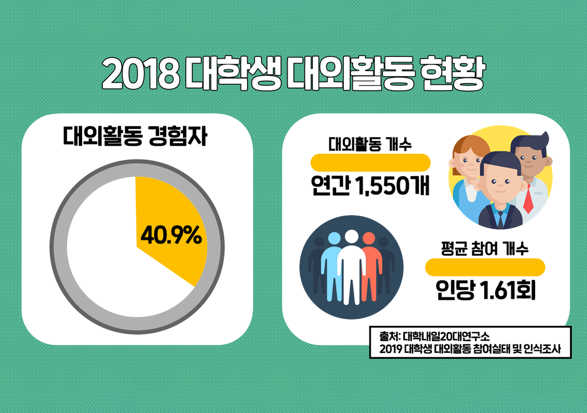
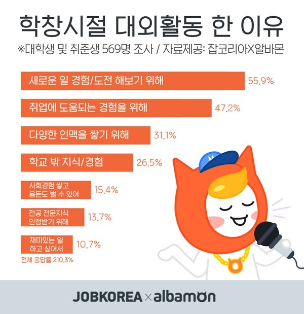
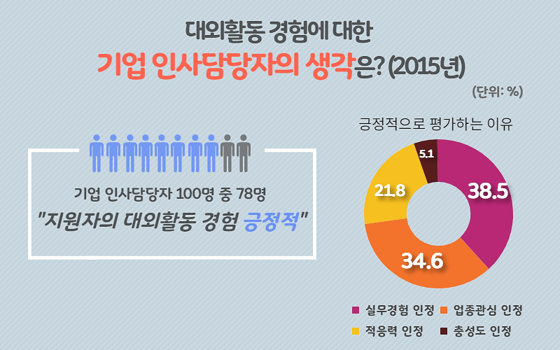

대외활동 그게 뭔데? 어떻게 하는건데?



2018 대학생의 40%는 연간 1550개,인당 연 1.6회 이상의 대외활동을 참여하고 있다.
또한 이러한 대외활동을 거시적인 관점에서 볼 때
회사에 취업하게 되는 경우 기업의 인사담당자 100명 중 78명은 대외활동의 참여에 매우 긍정적인 의사를 표하고 있다.
왜일까? 바로 대외활동을 통한 실무경험을 인정하고 업종에 관하여 관심을 가지고 있다는 것을 보여주고 있기 때문이다.
즉, 기업에 긍정적인 인식과 취업 이후 실무경험 전 미리 기반을 닦아놓는 작업이 될 것이다.
| 종류 |
정의 |
모집중이거나 모집했던 활동 |
| 공모전 |
공모전이란 '공개 모집한 작품 전시회'였지만 현재는 contest적 의미로 받아들여진다.
일반 대중을 대상으로 특정한 주제의 아이디어, 제안, 기획 혹은 작품 등을 심사해 상금 혹은 상품을 비롯한 특전을 제공하는 콘테스트이다. |
외국이야? 영월이야? 30초 광고제 (~07/02)
2020 홍루이젠 대학생 광고 공모전 (~07/20)
indeaxparty yunit 대학생 마케팅 공모전(~07/15)
|
| 서포터즈 |
해당 기업이나 사업체에서 소량의 운영 비용을 받으며 자체적인 sns채널과 콘텐츠 창출하는 활동이다. |
[영등포구청] 2020 청년창업생태계 조성사업 서포터즈 모집
[국무조정실] 청년참여단/온라인청년패널 참여자 모집
|
| 봉사 |
국내 혹은 외국으로 나가는 경우 2가지이며 봉사단에서 모집하거나 특정 기구에서 모집하는 경우가 많다. |
[대한민국교육봉사단] 2020년 하반기 씨드스쿨 자원봉사자 모집
[SK] 대학생 자원봉사단 SUNNY 모집
|
| 동아리 |
대학 내 동아리, 특정 지역구 내 대학생을 대상으로 한 연합 동아리, 등 다양한 형태로 존재하며 많은 이들과 친목 및 정보를 공유할 수 있는 모임이다. |
애드피아, 애드컬리지, 애드플래쉬, 프렌터, PUMA, 하마하마, CCC |
| 해외탐방 |
해외 봉사, 해외 인턴쉽, 채용을 목적으로 공고를 올리며 선정될 경우 해당 나라에서 봉사, 인턴쉽 활동을 진행하는 대외활동이다. |
문화체험본부 2021년 하반기 해외국립공원 봉사활동 모집 |
| 국토대장정 |
14박 15일정으로 강원도 쯤에서 전라남도 까지 약 580km 정도를 코스로 잡고 약 3주에 걸쳐서 진행된다. |
청춘부보상 국토대장정 14기 대원모집 |
| 인턴십 |
학생이 일정기간 동안 기업이나 공공기관에서 실제 업무를 체험하는 대외활동을 말한다. |
[JTBC미디어텍] JTBC미디어텍 하계 인턴쉽 모집
[한국디지털컨버전스협회]서율시 뉴딜일자리 모션그래퍼 인턴, 채용 5기
[한국국제협력단]2020 하반기 글로벌 연수사업 모니터링 인턴 모집
|